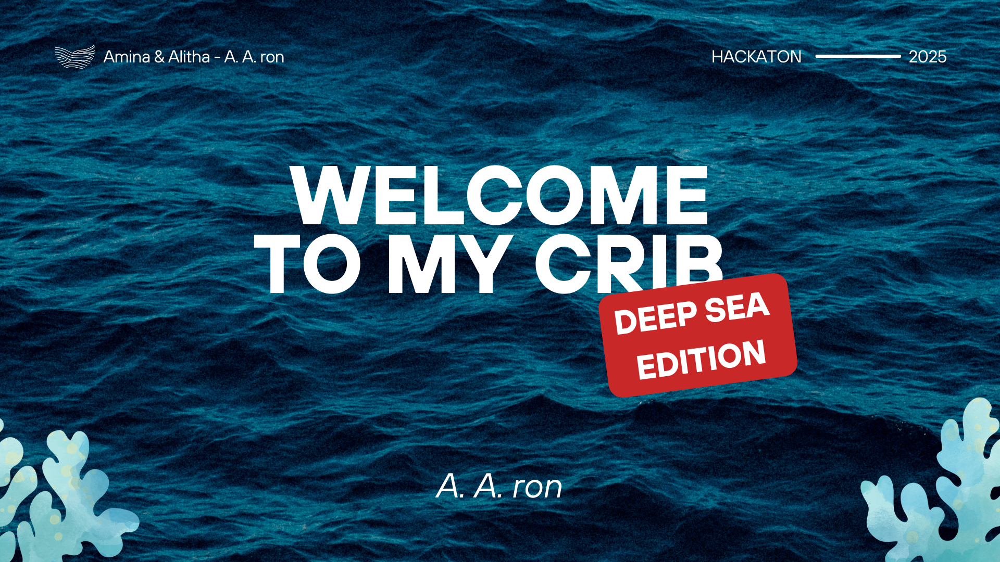
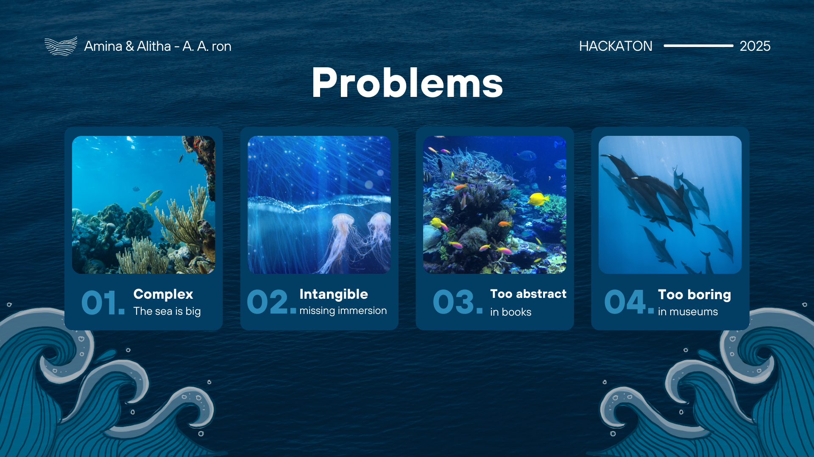
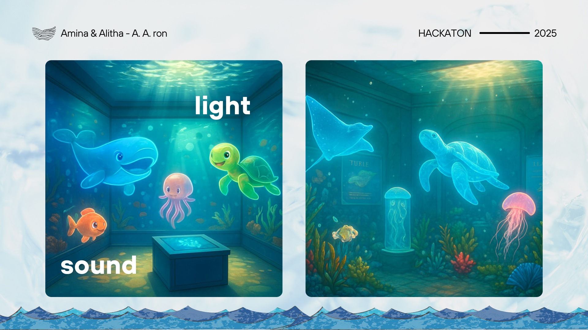
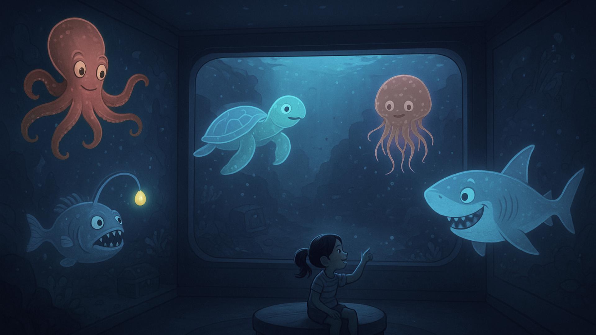
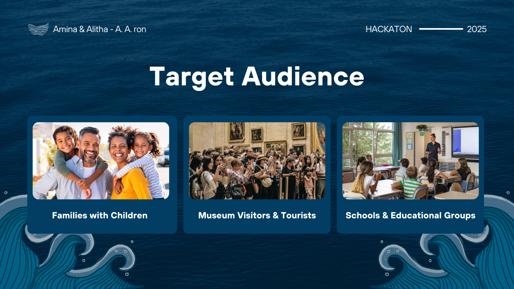

Context
De opdracht van de Humix Challenge was om mensen op een nieuwe manier kennis te laten maken met de diepe oceaan. Veel mensen weten niet hoe uitgestrekt, complex en indrukwekkend de zee eigenlijk is. Informatie over het diepzee-ecosysteem blijft vaak abstract, zeker voor kinderen. Begrippen zoals diepte, druk, licht en gedrag van dieren zijn moeilijk te begrijpen via boeken of klassieke museumopstellingen.
Uitdaging
Vooral kinderen en visueel-ruimtelijke leerlingen missen een manier om de oceaan echt te ervaren. Traditionele educatieve formats voelen vaak te statisch en onvoldoende prikkelend, waardoor nieuwsgierigheid en verwondering verloren gaan. Hoe maak je een onzichtbare wereld voelbaar, begrijpelijk en boeiend?
Oplossing
Onze oplossing vertrekt vanuit het idee: “Reality is boring, so let’s go underwater instead.” We ontwierpen een interactief appartementengebouw als onderdeel van een museum. Het gebouw bestaat uit vijf verdiepingen, elk gekoppeld aan één laag van de oceaan. Hoe lager je gaat, hoe dieper je letterlijk in de zee duikt.
Elke verdieping toont de dieren die in die specifieke laag leven, hun habitat en gedrag. Tegelijk verandert ook de sfeer: het wordt donkerder, stiller en intenser, net zoals in de echte oceaan. Op die manier ervaren bezoekers niet alleen informatie, maar voelen ze hoe de oceaan werkt.
Mijn proces
Tijdens Hack The Future 2025 werkten we in korte tijd een sterk concept uit rond het thema deep sea discovery. De focus lag niet op een afgewerkt product, maar op een heldere experience die complexiteit begrijpelijk maakt.
We startten met het probleem: de oceaan is voor veel mensen abstract knowing, vooral voor kinderen en visueel-ruimtelijke denkers. Boeken en klassieke musea slagen er niet in om diepte, licht, druk en schaal voelbaar te maken.
Van daaruit ontstond het idee van een onderwater-appartementenblok als museumconcept. Elke verdieping representeert één van de vijf oceaanlagen. Hoe dieper je gaat, hoe donkerder, stiller en intenser de ervaring wordt.
De visual explorations en flows werden snel geschetst en uitgewerkt in high-level screens om het verhaal en de ervaring duidelijk te maken.
Reflectie
Deze challenge bevestigde hoe krachtig experience-driven design kan zijn wanneer je complexe informatie wil overbrengen. Door het concept te benaderen als een fysieke ervaring in plaats van een klassieke interface, werd het verhaal meteen begrijpelijker en emotioneler.
Tegelijk was dit project een oefening in focus en keuzes maken. Door de tijdsdruk moesten we snel beslissen wat essentieel was en wat we bewust niet uitwerkten.
Het resultaat is geen volledig uitgewerkt product, maar wel een sterk conceptueel fundament dat aantoont hoe UX, storytelling en visueel design samenkomen in een educatieve context.




